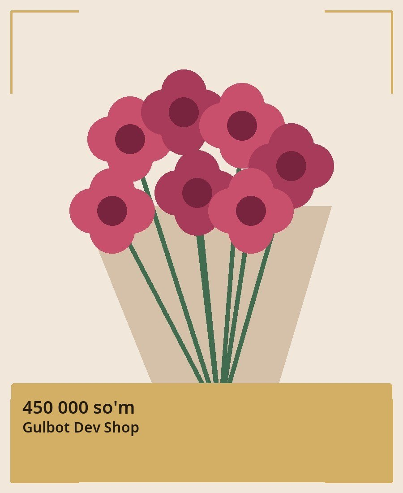

Published channel post
@guldokonkanal / 13

Atirgul buketi — 51 dona
Narxi: 450 000 so'm
✦ Nafis tanlov
Qizil atirgul, ellik bitta dona, narxi to'rt yuz ellik ming so'm
Tarkibi: qizil · 51 dona
Go'zallikni hadya qiling
Taqdim etadi: Gulbot Dev Shop
#atirgul #buket
Verified catalog row
| Shop / product | 1 / 23 |
| Name | Atirgul buketi — 51 dona |
| Price | 450,000 UZS |
| Finalized (UTC) | 2026-10-11T15:36:19.145507+00:00 |
No own channel_post update was observed during 8.5 seconds, with zero pending updates before or after. This is an observation, not a delivery guarantee.
The product was indexed through the existing CP8 ingest/finalize path immediately after publication.
Raw receipt and catalog evidence · All caption and image styles